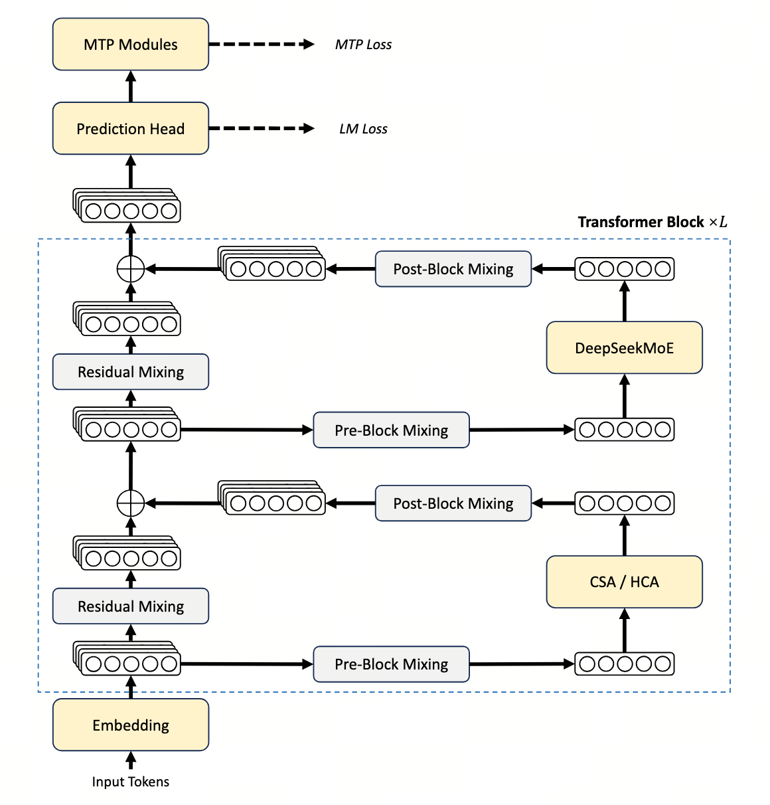

OVERVIEW · 章节零
摘要与架构全景
在百万 token 上下文成为前置条件之后，整张架构表都得重画。这一章把 V4 的全部主线一次说清。
DeepSeek-V4 是 DeepSeek 系列的下一代 MoE 模型，预览版本同时发布 V4-Pro（1.6T / 49B 激活）与 V4-Flash（284B / 13B 激活）， 二者均原生支持 1M tokens 上下文。它的目标只有一个： 让百万级长上下文从奢侈品变成日用品。
要做到这一点，V4 在三条战线同时下手 —— 注意力（CSA + HCA 混合）、 残差通路（mHC，流形约束的 Hyper-Connection）、 优化器（Muon + Hybrid Newton–Schulz）， 外加 FP4 量化感知训练、批不变确定性内核、多教师全词表 OPD 蒸馏 等一整套基础设施。
报告级数字 · 一眼看穿
- 1M token 场景下，V4-Pro 仅用 V3.2 的 27% 单 token FLOPs 与 10% KV cache。
- V4-Flash 进一步压到 10% FLOPs / 7% KV，相对 BF16-GQA8 baseline 更是降到约 2%。
- V4-Pro-Max 在 SimpleQA-Verified 上比同档开源模型高 20+ 个百分点，逼近 Gemini-3.1-Pro。
- Putnam-2025 的 frontier hybrid formal-informal 设置下，DeepSeek-V4 得到 120/120；这与 Practical 设置下 Flash-Max 的 81 分不是同一评测配置。
整体架构示意

局限与未来方向
预览版不是终点。论文 Conclusion 给出了 DeepSeek 团队自己写下的"To-do"，正好对应 V4 当前的几条短板：
- 架构复杂度：为了控制风险保留了不少"已验证 trick"，未来要做减法、追求 elegant；
- 稳定性理论：Anticipatory Routing 与 SwiGLU Clamping 的内部机制仍是黑箱，需要深入研究；
- 更稀疏的 embedding：CCSE 等方向（Cheng 2026）的引入；
- 低延迟长上下文：让 1M 真正走入交互式部署，而不只是离线批处理；
- 长程多轮 agent：继续打磨 long-horizon、多 round tool-use；
- 多模态：团队表示正在为模型加入多模态能力，但没有承诺具体版本或发布时间；
- 更好的数据合成与策展：持续投入。
一句话定位
V4 是一份"为百万 token 而设计"的全栈预览版：架构改了、内核改了、训练流程改了、推理流程改了、KV 体系改了 —— 而不是某个单点 trick 的胜利。 它给开源世界的礼物是：把长上下文从"成本异常项"变成"日常默认项"。